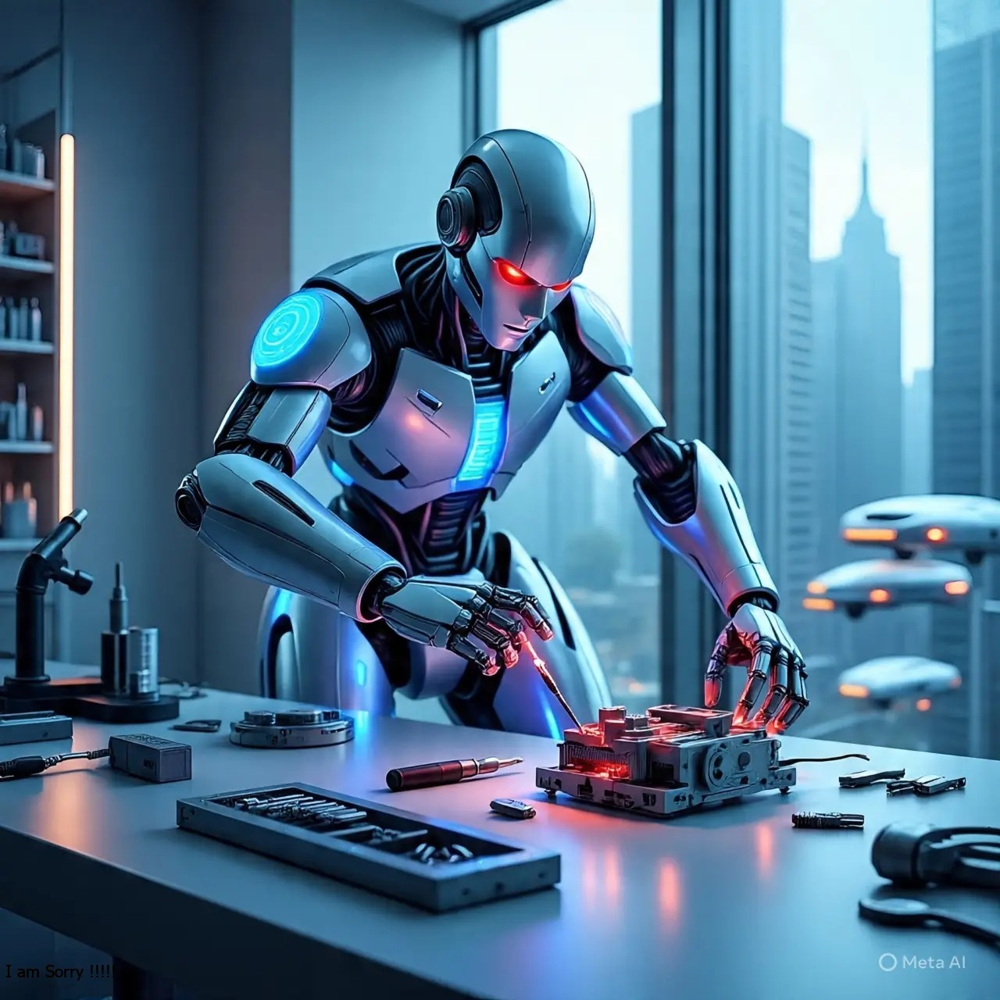

l'entreprise CES
Consumer Electronics Show (CES)c'est un salon international dédie à l'electronique grand public qui se tient chaque annéé à Las Vegas.

les actualités technologiques récent en 2026 sont principalement axéés sur l'IA,omniprésent,les contrainte énergetique les innovation présentéés au CES de Las Vegas.
Consumer Electronics Show (CES)c'est un salon international dédie à l'electronique grand public qui se tient chaque annéé à Las Vegas.
la technologie robotique connait une accélération majeure en 2026, marquée par l'integration de l'IA et l'essor des installations industrielle+ atteignant un reccord de 16,7 milliard de dollard US.
Le Tech&Fest s'impose comme le plus grand festival francais de l'innovation technologie
.Pour sa 3e édition,plus de 20000 visiteurs,249 speakers de référence et
350 entreprise exposantes se retrouvent les 4 et 5 février 2026 à alpexpo,à grenoble,
capitale européenne de l'innovation.Organisé par le dauphiné libéré et le groupe EBRA,l'événement
mele salon professionnel BtoB,conférences de haut niveau,démonstration technologiques et expériences
immersives grand public.Cette annéé,le fil rouge est la souveraineté techologique,énergétique et
numérique-un enjeu géopolitique majeur alors que l'Europe repense ses chaines de valeur stratégique
face aux géants américains et chinois.
.jpeg)
La catégorie ondes explore les fréquences électromagnétique,des ondes radio aux rayonnements invisibles. Comprendre ces phénomènes est essentiel dans notre société connectée ou ces ondes jouent un role central.